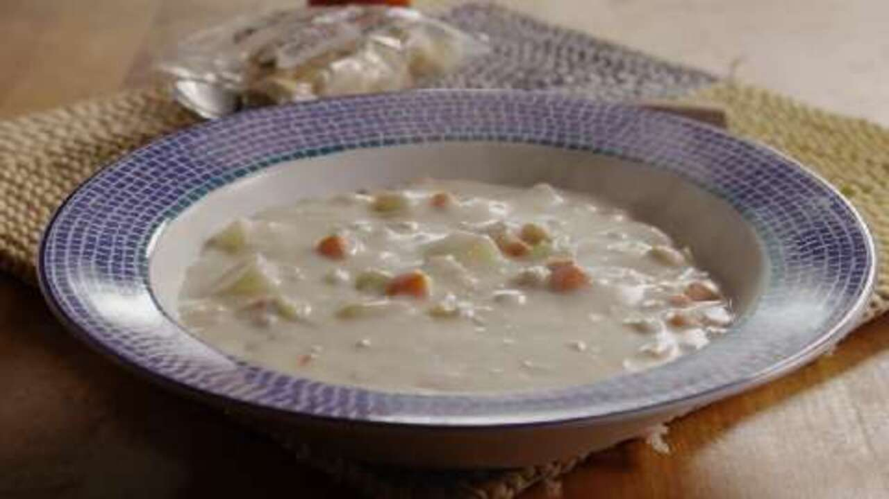

Clam Chowder

On a cold winter day, nothing beats a nice and hot clam chowder to warm yourself up!
Within 45 minutes, you can enough serving to feed 8 people!
Ingredients
- Potatoes
- Carrots
- Celery
- Onion
- Clams, or canned minced clams
- Butter
- Flour
- Cream
- Red wine vinegar
- salt & pepper
Steps
- Cook the vegetetables in the clam juice from your can of minced clams
- Using the butter and flour, make a roux
- whisk in the half and half cream
- stir in the vegetables you cooked into your roux
- add the clams
- Once heated, stir in vinegar and seasonings to your liking
- you can add in a cornstarch slurry if you prefer thicker soups
Now you are ready to serve and enjoy it with a side of bread or oyster crackers!
Back to Top
Back to Homepage